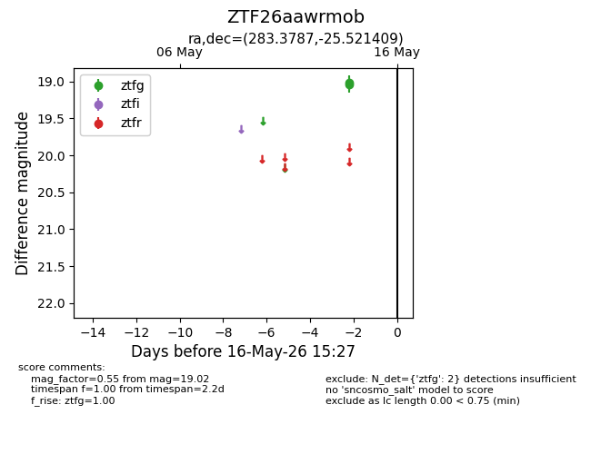
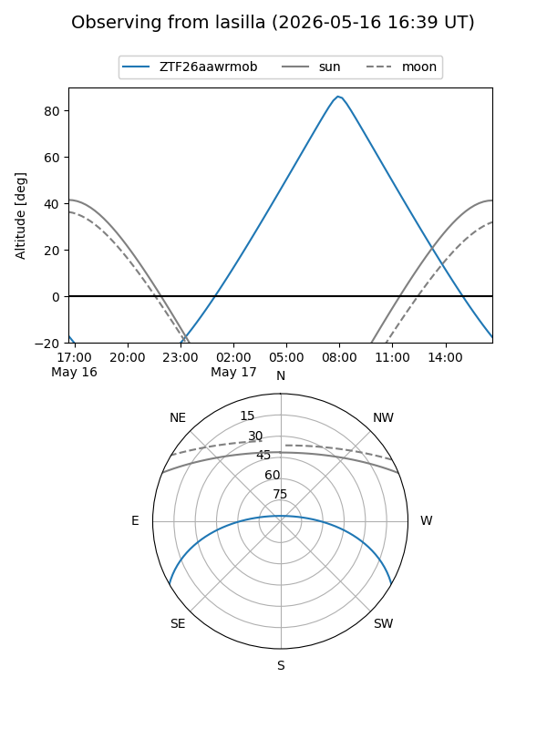
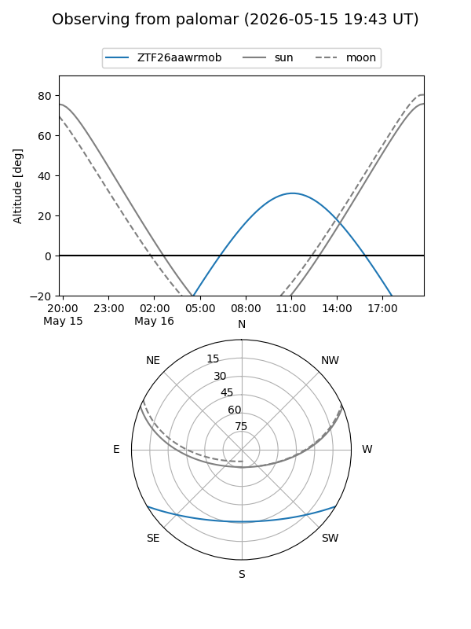

ZTF26aawrmob
Target ZTF26aawrmob at 2026-05-16 15:29
Aliases and brokers:
FINK: link
Lasair: link
ALeRCE: link
alt names
ZTF26aawrmob (ztf,fink_ztf)
Coordinates:
equatorial (ra, dec) = 283.3787,-25.52141
equatorial (HMS+DMS) = 18:53:30.89,-25:31:17.07
galactic (l, b) = (10.1108,-11.75564)
Flags:
Photometry:
last ztfg=19.02
2 ztfg detections
Lightcurve

Visibility


Additional plots